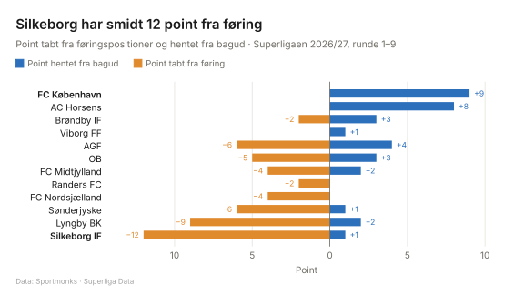
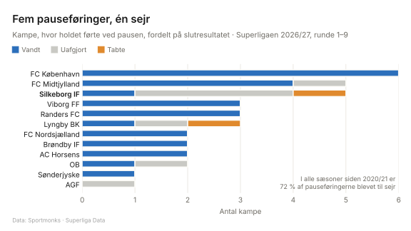
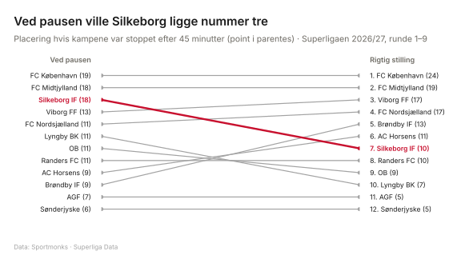

Silkeborgs forsvundne føringer
Hvem holder fast i føringen, og hvem slipper den?
Note til dig (slettes før udgivelse). Arbejdstitel: Silkeborgs forsvundne føringer. Alternativer: “Ved pausen er Silkeborg et tophold” · “FCK lukker kampene, Silkeborg åbner dem igen” · “12 point sluppet: hvorfor holder Silkeborgs føringer ikke?” Data til og med 20. september 2026 (9 runder, 54 kampe).
Data og periode. Sportmonks, kampe og hændelser. Superligaen 2026/27, runde 1–9 (24. juli – 20. september 2026), 54 kampe. Egne beregninger. Se også metodesiden.
Indledning: sæt scenen. Hvad er historien, og hvorfor er den interessant lige nu?
Point tabt og point hentet

Point tabt fra føring: For hver kamp, hvor holdet på et tidspunkt var foran, tælles 3 minus de opnåede point.
Point hentet fra bagud: Point i kampe, hvor holdet på et tidspunkt var bagud.
Stikord (fakta til din tekst)
- Silkeborg har tabt 12 point i kampe, hvor holdet var foran. Det er flest i ligaen; nummer to er Lyngby med 9.
- 1,33 point tabt pr. kamp mod et ligasnit på 0,46.
- Det er næstflest efter 9 kampe i alle sæsoner siden 2020/21 (rekord: FC Nordsjælland 2024/25, 13 point).
- De 12 point: FCK (1-3, 3 point), Brøndby (1-3, 3 point), samt FCM, AGF og Viborg (alle 1-1, 2 point hver).
- FC København har ført i 8 af 9 kampe og vundet alle 8, altså 0 point tabt fra føring.
- FCK har samtidig hentet 9 point fra bagud: 3-2 mod Lyngby, 3-1 mod Silkeborg og 3-1 mod Sønderjyske. Den eneste kamp uden føring var 0-4 mod Viborg.
- AC Horsens har været bagud i 8 af 9 kampe, men har hentet 8 point fra bagud. Kun FCK har hentet flere.
- Hele ligaen: 50 point tabt fra føring og 34 point hentet fra bagud på 9 runder.
Dit afsnit om graf 1.
Pauseføringer, der ikke holdt

Pausestilling: Mål til og med 45. minut, inklusive tillægstid i 1. halvleg.
Stikord (fakta til din tekst)
- Silkeborg har ført ved pausen 5 gange: 1 sejr (4-0 mod Lyngby), 3 uafgjorte (FCM, AGF, Viborg) og 1 nederlag (1-3 mod Brøndby).
- I hele ligaen i 2026/27 er 26 af 35 pauseføringer blevet til sejr (74 %), 7 til uafgjort og 2 til nederlag.
- Historisk er det 68–75 % pr. sæson (2020/21–2025/26).
- Halvdelen af ligaens nederlag efter pauseføring er Silkeborgs (1 af 2).
Dit afsnit om graf 2.
Hvis kampene sluttede ved pausen

Placering ved pausen: Sorteret alene efter point. Ved pointlighed er rækkefølgen tilfældig.
Stikord (fakta til din tekst)
- Ved pausen: Silkeborg 18 point, lige med FCM, som får 2.-pladsen. Rigtig stilling: 7.-plads med 10 point, altså 8 point mindre.
- De største fald ud over Silkeborg: Lyngby fra 6. til 10. plads (11 → 7 point).
- De største stigninger: Brøndby fra 10. til 5. plads (9 → 13 point) og AC Horsens fra 9. til 6. plads (9 → 11 point).
- FCK fører både ved pausen (19 point) og i den rigtige tabel (24 point). Holdet har hentet 5 point efter pausen.
Afslutning: Hvad betyder det? Er det held, form eller et mønster? Hvad skal man holde øje med i de næste runder?
Begrænsninger. 9 kampe er en lille stikprøve, så enkelte kampe flytter meget. Holdene har ikke mødt de samme modstandere endnu.